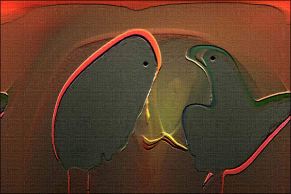
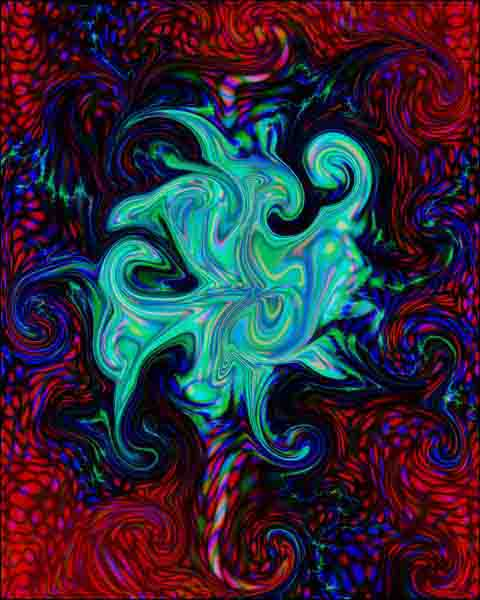
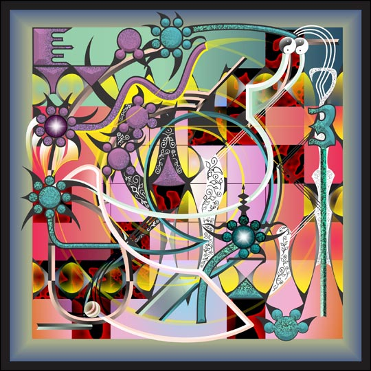
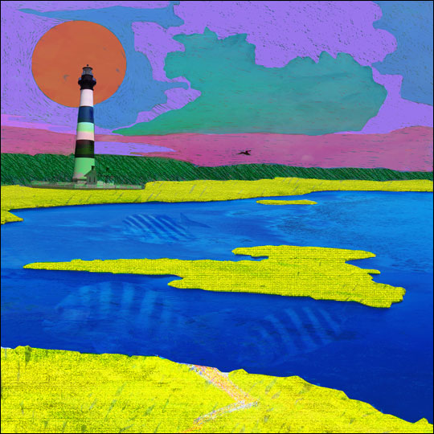
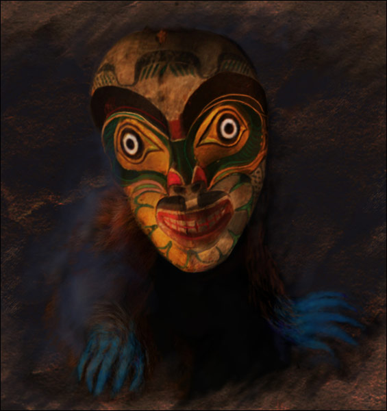
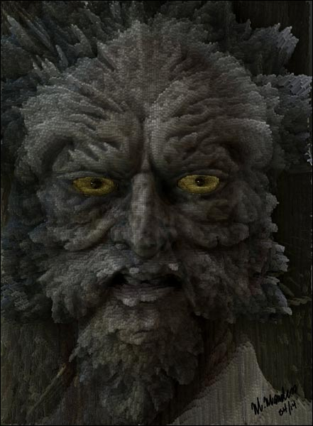
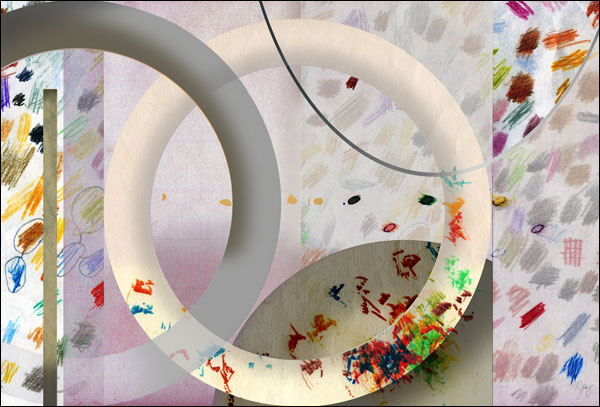
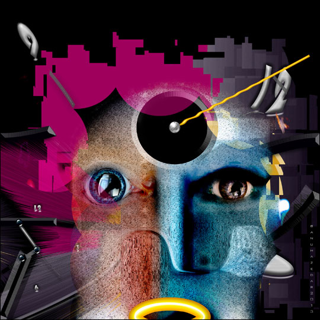
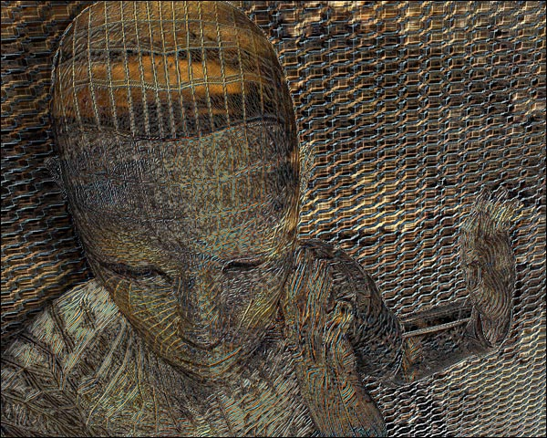
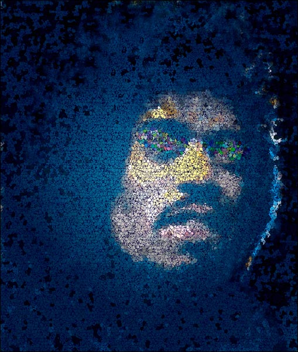

IMAGES OF THE DAY 17
12/01/2021 - 12/10/2021
Click image to visit MOCA gallery where image resides
Abstract Compu Painting 2 
by Harshad Shah
12/01/2021
Fantastic 
by Sue Brooke-Roberton
12/02/2021
The Illusion of Manners 
by Andrew Cole
12/03/2021
Bodie Island Shores 
by Rod Whyte
12/04/2021
Dancers of the Fallen Sky 
by Randy Morris
12/05/2021
Lumpy 
by Michael Mardus
12/06/2021
Prosperity 
by Jay Wilson
12/07/2021
Imagine: You May Say I'm a Dreamer 
by Banu Haznedar
12/08/2021
Incubation 
by David Dixon
12/09/2021
The Axeman 
by Gina Topping
12/10/2021